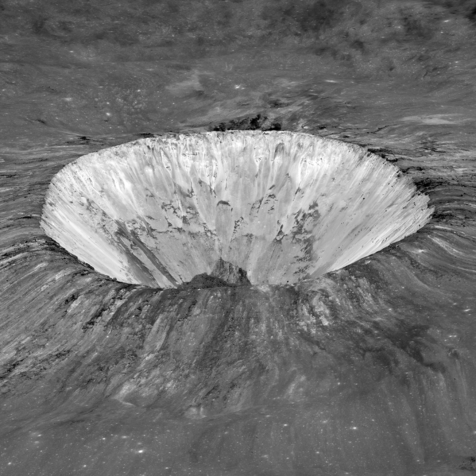
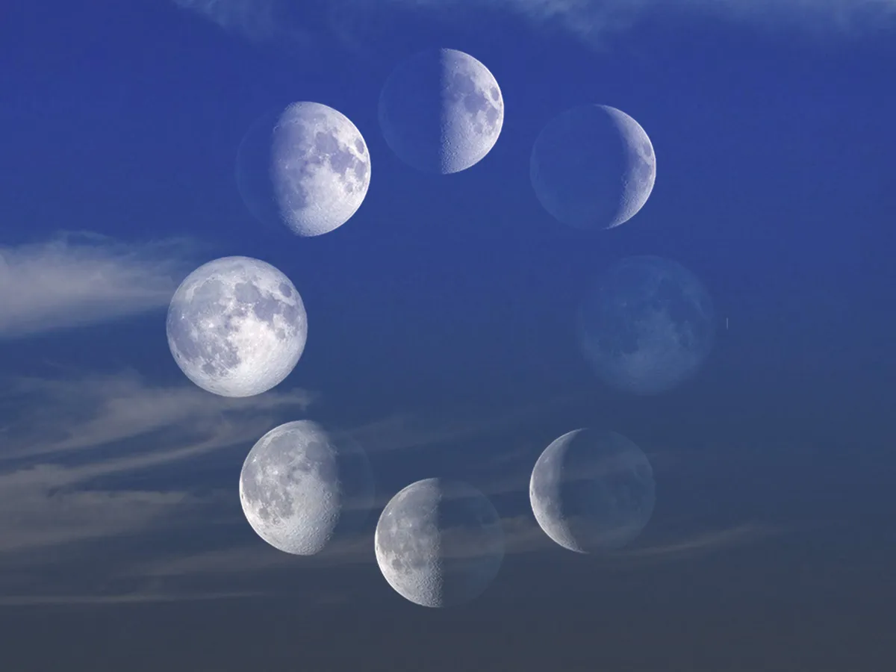

Moon Exploration
From lighting up our skies to preserving evidence of our solar system’s history, Earth’s closest neighbor plays a pivotal role in the study of our planet and beyond.

Like Earth, the Moon consists of three main layers: a crust, a mantle, and a core Billions of years ago, the Moon was a molten world. As it solidified, the heaviest materials (metals like iron) sank down into the Moon’s center, and the lighter materials (lower density rocks) rose towards the surface. The result is a structure a bit like a chocolate-dipped cherry – solid core, mostly solid/partly liquid mantle, and thin outer crust.

Earth's Moon is covered in craters.Lunar craters tell us the history not only of the Moon, but of other worlds, too. On the Moon, where there’s no liquid water or wind, evidence of our solar system's impact history has been preserved for billions of years.

Earth's view of the half-sunlit Moon shifts throughout the month. As our perspective changes, we observe a pattern known as lunar phases: new moon, waxing crescent, first quarter, waxing gibbous, full moon, waning gibbous, third quarter, and waning crescent.